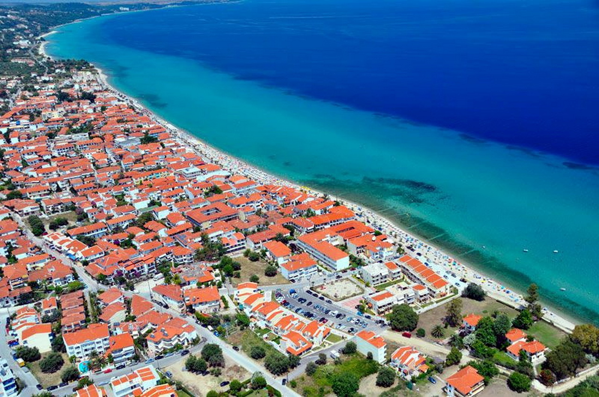

Dobrodošli na obale Grčke, doma Mediterana koji očarava svojom lepotom, istorijom i gostoljubivošću. Ova zemlja bogate kulturne baštine nudi nezaboravno iskustvo za sve ljubitelje letnjeg odmora. Očekuje vas beskrajno plavi Egejski i Jonsko more, sa svojim prelepim plažama i kristalno čistim vodama. Uživajte u sunčanju na peščanim plažama, istražite skrivene uvale ili se prepustite aktivnostima na vodi poput ronjenja ili vožnje čamcem. Prošetajte kroz antičke gradove poput Atine, Soluna ili Herakliona i otkrijte bogatu istoriju koja seže hiljadama godina unazad. Uživajte u ukusnoj grčkoj kuhinji, sa svežim morskim plodovima, maslinovim uljem i tradicionalnim specijalitetima poput souvlakija i moussake. Za ljubitelje prirode, grčka ostrva nude neverovatne pejzaže sa planinskim vrhovima, tirkiznim zalivima i slikovitim selima. Pronađite svoj raj za odmor na ostrvima poput Santorinija, Mikonosa ili Krete. Grčka je destinacija koja će vas očarati svojom lepotom, istorijom i kulturom. Doživite letovanje puno avanture i opuštanja na obalama ovog predivnog mediteranskog raja. Vaše letovanje u Grčkoj počinje ovde!
